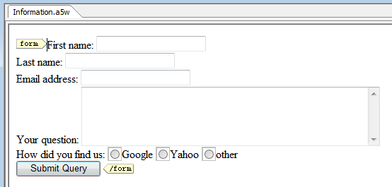

Using Hidden Form Controls
A hidden form on a field is a way to submit data from the current page
to the form's target without displaying that data to the application user.
For example, take the following form that could be for a user to request
more information from your website. This form would be part of page1.a5w.
|
This will collect the basic information from a site visitor and presumably page2.a5w will put it in a database where a customer service representative can respond to the question. But let us say you would like to know how these inquisitive visitors are finding your web site. You can simply ask them by adding the following HTML within the <form>...</form>.
|

Now the user is presented with check boxes to explain how they found
you. But this could be made easier for the user by not asking them. Request.Referer (yes, it really
is referer, not referrer). It is defined by the HTTP specification and
has remained unchanged for historical compatibility) will contain the
URL of the page from which the user came. So instead of a radio button
asking the user where they came from, you can find out on our own.
The problem is that page2.a5w which is doing the
recording is preceded by page1.a5w and that's
not what you want to record. So you need to look at Request.Referer
on page1.a5w and pass it along to page2.a5w.
One way to do this is with:
|
But now the user sees the question posed to them and has an opportunity to change the answer. What you really want to do is hide this data from the user since they do not need to be concerned with supplying it and we do not want to give them an opportunity to modify it. This can be accomplished by changing the above to be a hidden field: Note: Don't try running this in the WYSIWYG mode, run it in the code editor.
|
One thing to keep in mind with this example is that Request.Referer will not always exist. If a user types in a URL directly or starts from their bookmarks, there is no previous page so there is no Request.Referer. Currently this means you need to do an eval_valid() on Request.Referer before you can use it.
See Also
Limitations
Web publishing applications only.